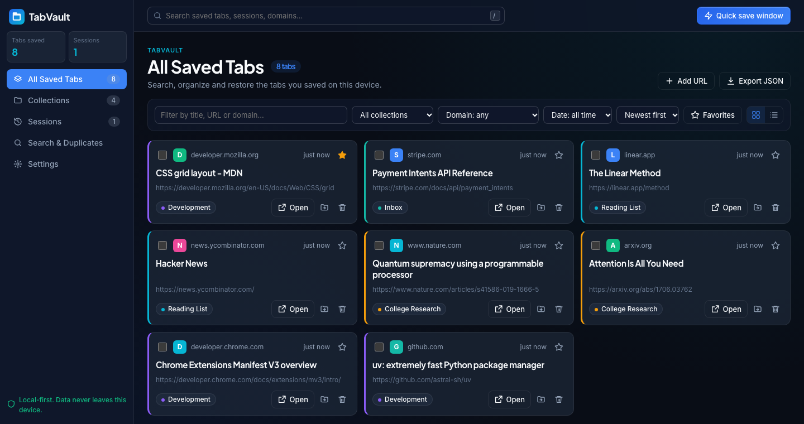

Save in one click
Save the current tab or the whole window into a collection. Chrome-internal pages are skipped automatically.
Chrome extension · Manifest V3
Save tabs, organize them into collections, and restore whole browsing sessions in one click. Everything stays on your device: no account, no sync, no tracking.
Open source. Load unpacked in Chrome 120+. See install steps.

These are the real popup and dashboard pages running on sample data. Your changes are kept only in this browser and never sent anywhere.
Save the current tab or the whole window into a collection. Chrome-internal pages are skipped automatically.
Group tabs by project or topic. Rename, move, restore a whole collection in a new window.
Snapshot a window with a name and timestamp, then bring it back whenever you need it.
Find by title, URL or domain. Filter by collection and date, sort, favorite, grid or list.
Spots repeated URLs even with tracking parameters. Keeps the newest copy and always asks first.
Data lives in chrome.storage.local. Import and export JSON. Only tabs and storage permissions.
chrome://extensions and turn on Developer mode.tabvault-extension folder (the one containing manifest.json).